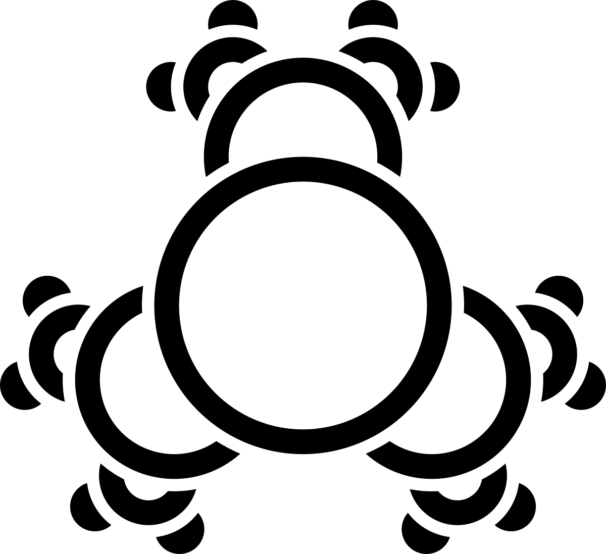

28 Sept 2024
since my setting demands a warning symbol like this, I had this one kicking around inside my brain for about a year, alongside the transformation hazard. it finally got released on 15 Mar 2024, over on cohost
this is a symbol to indicate a self-replication hazard, usually of a non-biological origin. ever-smaller circles budding off a central starting point evoke the similarities to replication of living cells. the three-fold symmetry follows with traditional abstract warning signs
while the elements of, say, a nanobot swarm, may themselves be made of the same stuff as living things, there are key differences that normally prevent them from replicating without bound; just in case they go beyond those bounds, it's a good idea to have this warning handy! (also an autoclave. maybe some caustic cleaners for good measure.)
there's no standard warning color for this one, so I've produced versions in black lines and white lines, for maximum contrast on any background. dark mode and light mode users might see an apparently blank image for one of these. both are 1200 pixels wide, as is becoming a standard for me with these. (yes, there are SVG versions, too, but I'm not ready to release those yet)
as is the case with the other hazard symbols I've made...
if you want to use it yourself, in things you make, just make sure you credit me for making it! linking back to this page would be best, and the name "yaodema" is what I go by almost everywhere online
one thing to note: do not sell the symbol by itself. it's fine to put the warning on things in your art where it'd be appropriate, or to put the symbol prominently on a vial of something for a bit, and people have done this before. I've been quite happy with every case I've seen of it in the wild, so far! just, don't sell stickers or magnets or something with the symbol on it. thank you!
(this is essentially CC-BY, but with an extra clause that forbids selling the symbol by itself, or as the whole point of the thing being sold.)
also, if you want this tattoed on your body, go right ahead! (to allow this, tattoo artists are of course allowed to put the symbol on someone's body, if that someone requests it)
hope you enjoy!